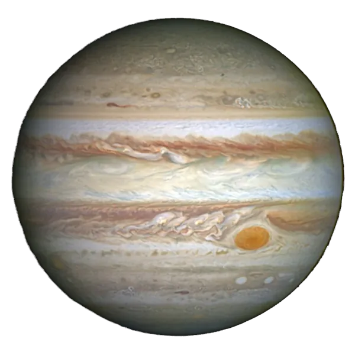
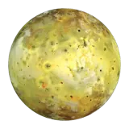
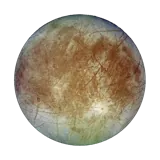
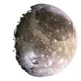
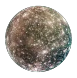

Jupiter
Planet 5 from the Sun
When and how it formed
Beyond the "snow line", where water froze into ice, a solid core grew quickly to many times Earth's mass. Its gravity then pulled in huge amounts of hydrogen and helium gas. Jupiter was the first planet, and its gravity shaped where the others could form.
A core of rock and ice grows to about 20 times Earth's mass.
It pulls in gas fast; meteorites show it split the young disk into an inner and an outer part.
The gas disk is gone; Jupiter has its full size, and its big moons form around it.
Juno found its core is not a small solid ball but "fuzzy", spread out and mixed with gas.
All dates are estimates from meteorites, moon rocks, space missions and computer models.
Inside this world · Tap a layer
Telescope eyepiece simulator
Live moon positions
Atmosphere
Oxygen vs Earth: 0% / 20.95%0% / 20.95% · Not breathable, a spacesuit is needed
Could humans live here?
Scored from temperature, air pressure, oxygen, water, surface and gravity. Earth scores 10.
60 kg on Earth feels like
2.36× Earth's gravity · Your weight on other planets
Did you know?
Jupiter has more than twice the mass of all the other planets put together.
The Great Red Spot is a storm bigger than Earth, and people have watched it for more than 150 years.
Major moons

3,643 km3,643 किमी

3,122 km3,122 किमी

5,268 km5,268 किमी

4,821 km4,821 किमी